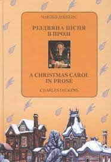

Моя улюблена книга
Назва книги: Різдвяна пісня в прозі
Автор: Чарльз Діккенс
“Різдвяна пісня в прозі” Чарльза Дікенса – це класична різдвяна історія, яка через фантастичний сюжет розповідає про переродження скупого Ебенезера Скруджа. Використовуючи символізм і відвідини трьох різдвяних привидів, Дікенс показує важливість щедрості, родинних цінностей та самопізнання. Цей твір став символом Різдва і нагадуванням про те, що ніколи не пізно змінити себе на краще.